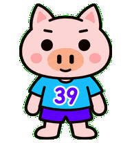
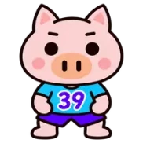

検索で見つけてもらうための「言葉選び」3つの手順
この記事でわかること
- 検索で見つけてもらうために、まず考えたい「言葉」のことが分かります
- 探している方の言葉を、ページの題名や見出しに生かす方法が分かります
- 公開した後に、言葉を見直していく続け方が分かります
検索は「言葉」と「言葉」の出会い
ご家族が利用先を探すとき、これから働きたい方が職場を探すとき、多くの方はスマートフォンで言葉を入れて検索します。たとえば「地域の名前」と「サービスの種類」を組み合わせて調べる、といった探し方です。
このとき、ホームページの中に、探している方が入れた言葉と同じ言葉や、近い言葉が書かれていると、見つけてもらえるきっかけが生まれます。反対に、事業所の中だけで使っている呼び方や、正式な名前だけで書かれていると、せっかくの情報が探している方に届きにくくなることがあります。
検索で見つけてもらう工夫は、難しい技術よりも先に「探している方と同じ言葉で書くこと」から始まります。

ぶひおPOINT
特別な設定をする前に、まずは「どんな言葉で探されているかな？」と考えてみるのが一番の近道だよ。
手順1：探している方の言葉を書き出す
最初に、ホームページを見てほしい方が、どんな言葉で検索しそうかを書き出してみましょう。見てほしい方が複数いる場合は、それぞれに分けて考えると整理しやすくなります。
- 利用を考えているご本人やご家族：地域の名前、サービスの種類、「見学」「相談」など
- 相談支援専門員やケアマネジャーなど、紹介してくださる方：地域の名前、サービスの種類、対象となる方、空き状況など
- 働きたい方：地域の名前、職種、「求人」「パート」など
書き出すときは、職員みんなで話し合ったり、これまでの電話やお問い合わせで「どんな言葉で聞かれたか」を思い出したりするのがおすすめです。実際に聞かれた言葉は、探している方の言葉そのものです。
注意
業界の中で使う略し方や専門的な言い方は、ご家族や地域の方には伝わりにくいことがあります。正式な名前を書くときも、あわせて分かりやすい言い方を添えておくと安心です。
手順2：ページの題名と見出しに言葉を生かす
書き出した言葉は、ホームページのいろいろな場所に生かせます。特に大切なのは、次の3か所です。
- ページの題名：検索結果に表示されやすい部分です。事業所名だけでなく、地域の名前とサービスの種類を入れると、何のページかが伝わりやすくなります
- ページの説明文：検索結果で題名の下に表示されることがある短い文章です。どんな方に、どんなことをしている事業所かを、短くまとめます
- 本文の見出し：ページの中の見出しにも、探している方の言葉を自然に入れます。読む方にとっても、どこに何が書いてあるかが分かりやすくなります
ここで気をつけたいのは、言葉を無理にたくさん詰め込まないことです。同じ言葉を何度も繰り返すと、かえって読みにくい文章になってしまいます。検索のためだけでなく、読む方にとって分かりやすい文章になっているかを、いつも一緒に確かめましょう。
ページの題名や説明文は、ホームページの作り方によって入れる場所が違います。自分で変えられるか分からないときは、ホームページを作った会社や担当の方に「題名と説明文を変えたい」と相談してみてください。
手順3：公開した後も、言葉を見直していく
言葉を整えたら、それで終わりではありません。しばらくたってから、実際に探している方の立場になって、スマートフォンで検索してみましょう。
- 書き出した言葉で検索したとき、自分の事業所のホームページが出てくるか
- 検索結果に表示される題名や説明文が、分かりやすい内容になっているか
- 新しく始めたサービスや、よく聞かれるようになった言葉が、ホームページに載っているか
検索の結果は、すぐに変わるとは限りません。あせらずに、季節の変わり目や、お知らせを更新するときなど、見直す時期を決めておくと続けやすくなります。また、新しく聞かれるようになった言葉があれば、手順1のメモに書き足しておきましょう。

ぶひお
ご家族や地域の方の言葉で書かれたホームページは、検索だけじゃなく、読んだ方にもやさしく伝わるよ。少しずつ育てていこう！
まとめ
検索で見つけてもらうための第一歩は、探している方が使う言葉を知り、その言葉でホームページを書くことです。手順1で言葉を書き出し、手順2でページの題名・説明文・見出しに生かし、手順3で公開後も見直していく。この3つを続けることで、ホームページは少しずつ、届けたい方に見つけてもらいやすくなっていきます。
まずは、いつも電話やお問い合わせで聞かれる言葉を、3つ書き出すところから始めてみてください。